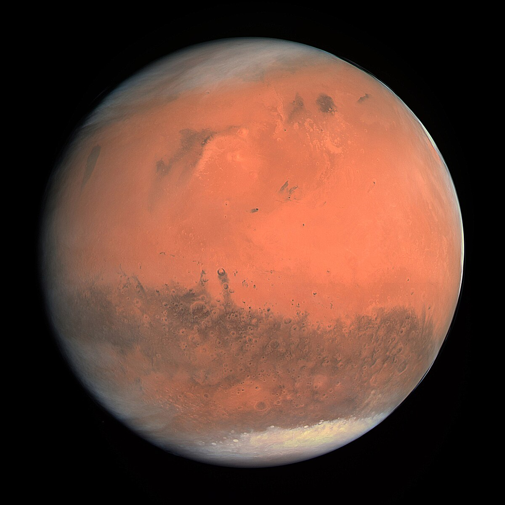
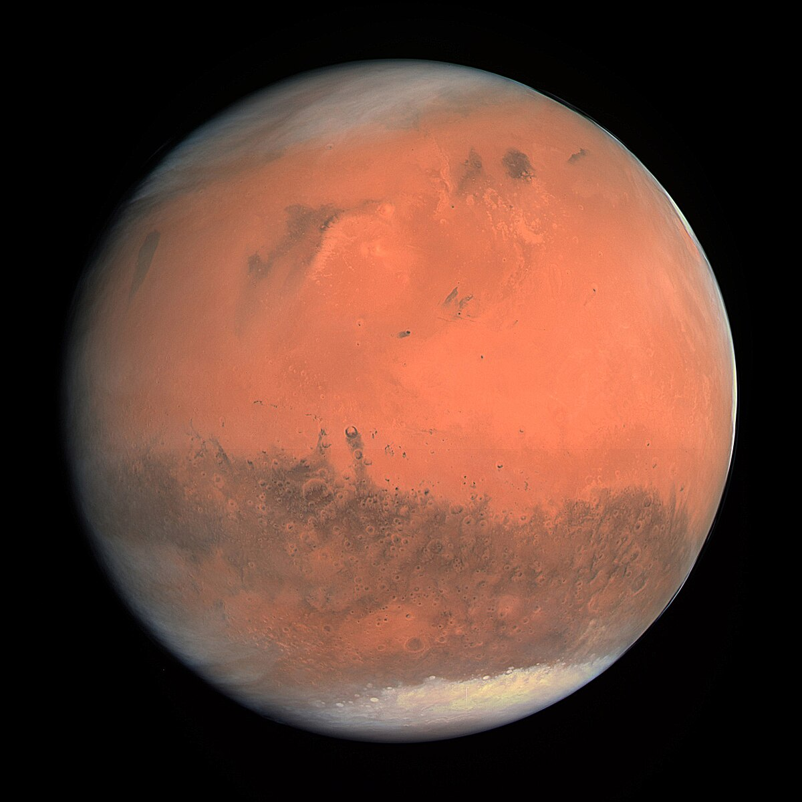

EasySpace
 Marte

Jupiter
Saturno
Marte

Jupiter
Saturno
 Urano
Namek
Tatooine
Urano
Namek
Tatooine

Antes de pagar millones por un viaje a Saturno y arrepentirte a medio camino cuando descubras que no hay WiFi, te invitamos a probar nuestro Simulador de Viajes Espaciales. Una experiencia única (y segura) para clientes galácticamente curiosos, pero ligeramente cobardes. Recorre los planetas desde tu pantalla, sin riesgo de congelarte, explotar ni flotar incómodamente. Después de esta prueba seguro que querrás vivir la experiencia real. Cada destino incluye imágenes impactantes, datos curiosos y un par de sorpresas. Prepárate para explorar sin despegar los pies del suelo... por ahora .
Pulsa sobre un planeta para saber más.